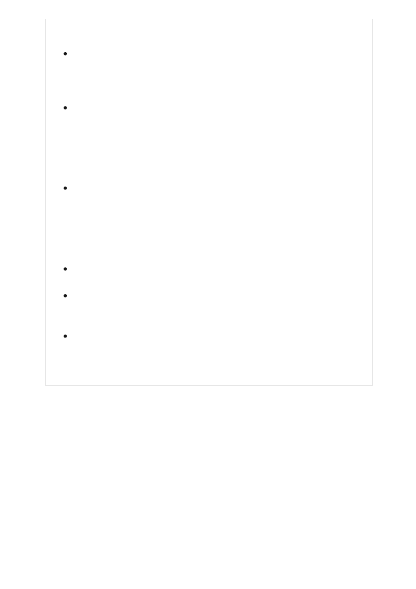

date, likely has missing knowledge about some topics, and may not always
produce factually accurate information.
Avoid scenarios where use or misuse of the system could result in significant
physical or psychological injury to an individual. For example, scenarios that
diagnose patients or prescribe medications have the potential to cause
significant harm.
Avoid scenarios where use or misuse of the system could have a
consequential impact on life opportunities or legal status. Examples include
scenarios where the AI system could affect an individual's legal status, legal
rights, or their access to credit, education, employment, healthcare, housing,
insurance, social welfare benefits, services, opportunities, or the terms on
which they're provided.
Avoid high stakes scenarios that could lead to harm. The models hosted by
Azure OpenAI service reflect certain societal views, biases, and other
undesirable content present in the training data or the examples provided in
the prompt. As a result, we caution against using the models in high-stakes
scenarios where unfair, unreliable, or offensive behavior might be extremely
costly or lead to harm.
Carefully consider use cases in high stakes domains or industry: Examples
include but are not limited to healthcare, medicine, finance, or legal.
Carefully consider well-scoped chatbot scenarios. Limiting the use of the
service in chatbots to a narrow domain reduces the risk of generating
unintended or undesirable responses.
Carefully consider all generative use cases. Content generation scenarios may
be more likely to produce unintended outputs and these scenarios require
careful consideration and mitigations.
When it comes to large-scale natural language models and image models, there are
particular fairness and responsible AI issues to consider. People use language and
images to describe the world and to express their beliefs, assumptions, attitudes, and
values. As a result, publicly available text and image data typically used to train large-
scale natural language processing and image generation models contains societal biases
relating to race, gender, religion, age, and other groups of people, as well as other
undesirable content. These societal biases are reflected in the distributions of words,
phrases, and syntactic structures.
Limitations
Technical limitations, operational factors and ranges